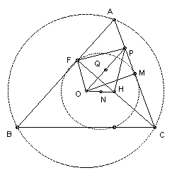

ABC is an acute-angled triangle with BC longer than AC. O is the circumcenter and H is the orthocenter. CF is an altitude. The line through F perpendicular to OF meets the side AC at P. Show that angle FHP = angle A.
Solution

Let M be the midpoint of AC and Q the midpoint of OP. Then angle OFP = angle OMP = 90o, so Q is the midpoint of the circle through O, F, P, M. Let N be the midpoint of OH. Then N is the center of the nine-point circle through F, M (and other points). Both N and Q must lie on the perpendicular bisector of the common chord FM, so NQ is perpendicular to FM. Since N is the midpoint of OH and Q is the midpoint of OP, NQ is parallel to HP. Hence HP is perpendicular to FM. So angle FHP = 90o - angle MFH. But M is the center of the circle through A, F, C, so angle MFH = angle MFC = angle MCF = 90o - A. Hence angle FHP = angle A.

© John Scholes
jscholes@kalva.demon.co.uk
16 Dec 2002